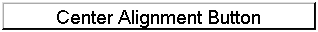
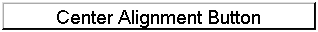
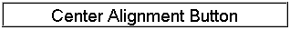
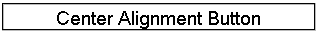

bevel lowered

bevel raised

Borders represent the line/pattern around a component and optionally behind the component (in which case it supercedes the other background definitions for the component). There are several types of borders detailed bellow. Borders are usually drawn at the edge of the component space, unlike CSS which has a specific area for border space CodenameOne uses the edge of the padding space for the border. This effectively means that a theme must make sure to have component padding that is large enough to fit the border within it.
This effectively indicates the component has no border, the main difference between empty border and null
border related to style inheritance. E.g. in the case of a Button a default border exists, if we were to define the
border as null the value would not override the buttons border.
However, defining the border as empty works as expected by removing the border from the button.
The bevel border type presents a simple 3D style border that can appear lowered or raised thus
providing simple depth perception e.g. for button presses. The bevel border is comprised of 4 colors
representing its appearance, it can accept these in the color pickers or use the "theme colors" checkbox
to automatically derive colors from the theme (using the components foreground/background colors to
calculate a proper color for the border).
bevel lowered
bevel raised

The etched border type provides a look similar to an engraved line, like the bevel border it too can appear
raised or lowered. The etched border is comprised of 2 colors
representing its appearance, it can accept these in the color pickers or use the "theme colors" checkbox
to automatically derive colors from the theme (using the components foreground/background colors to
calculate a proper color for the border).
etched lowered

etched raised

The line border just draws a rectangle around the component with the option of defining the thickness/color of said rectangle. The line border can also use the "theme colors" checkbox to use the components foreground color.
The round border draws a rounded rectangle and optionally fills the background appropriately.
PERFORMANCE WARNING: the round border might be very expensive! A round border is
cheap for a completely opaque solid color. However, when using features such as gradients, images or
alpha channel the round border effect is calculated on the fly! This is hugely expensive, we recommend
trying to achieve these same effects with the image borders which are cheaper.
The round border allows defining its color (or using the theme color) it also allows defining the size
of the arcs rounding the border.
The image border option will only appear when images exist in the resource file, you can read more on creating image borders in the image border wizard. Image borders come in 4 flavors: